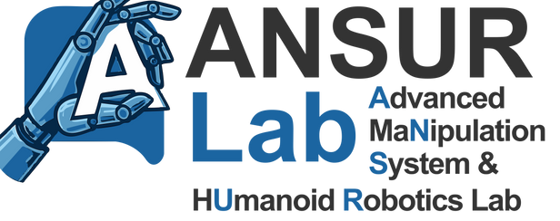
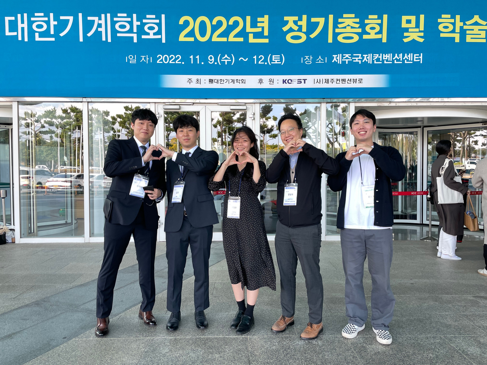
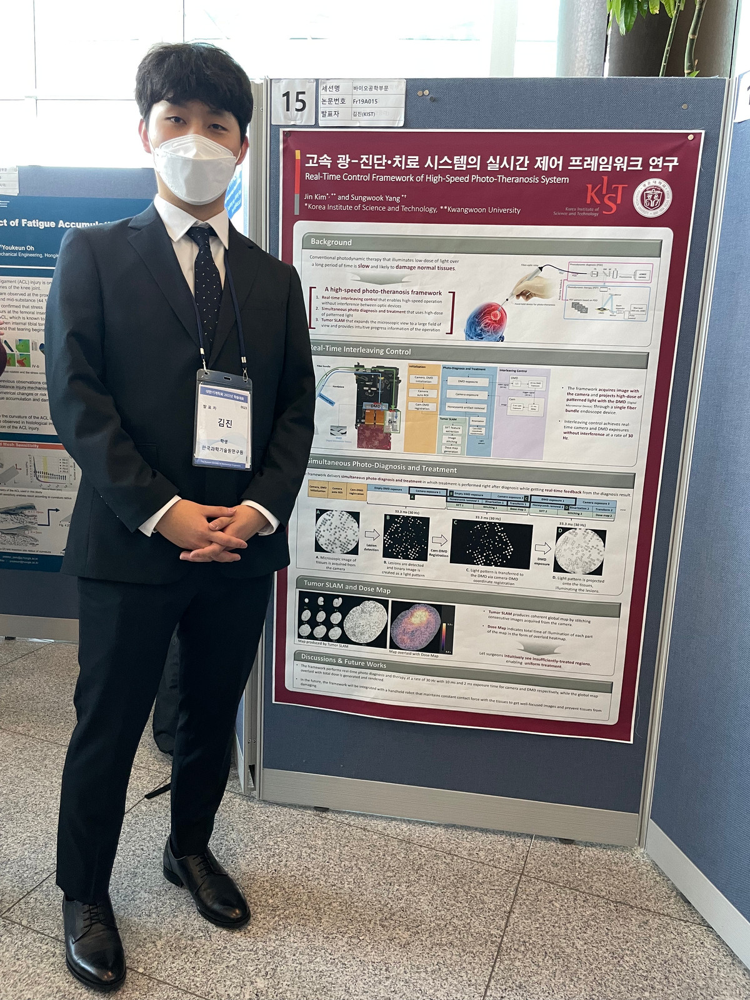
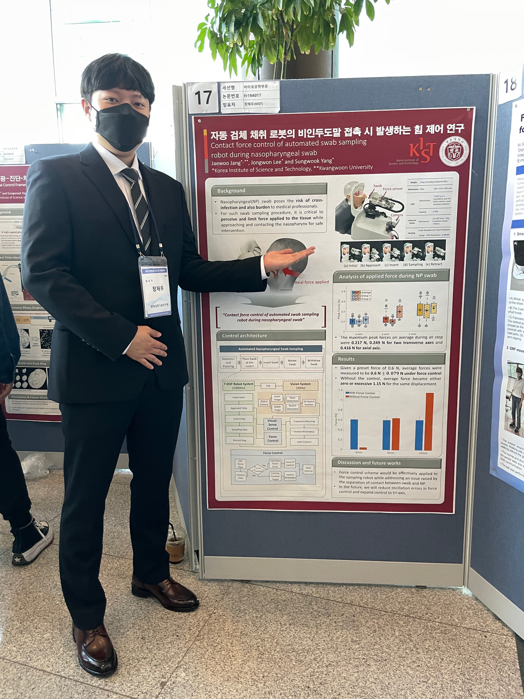
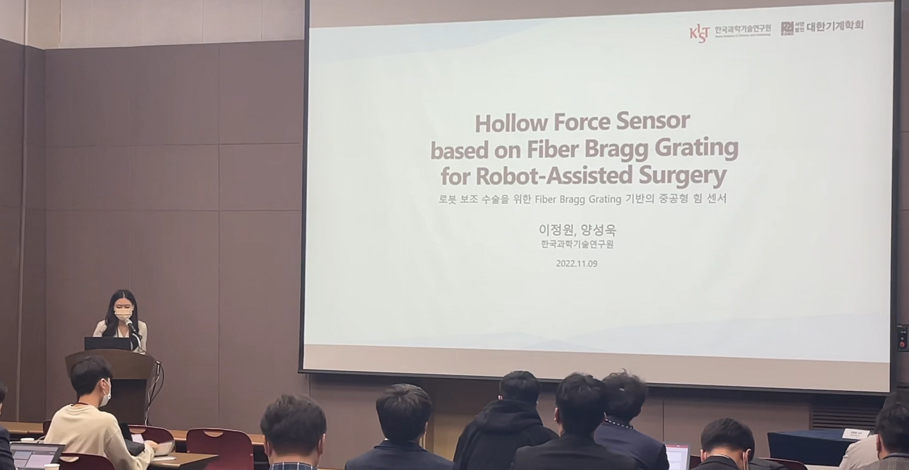

Skip to content

A
dvanced Ma
n
ipulation
S
ystem
& H
u
manoid
R
obotics Lab
KOREA INSTITUTE OF
SCIENCE AND TECHNOLOGY
Home
People
Research
⌄
Dexterous Manipulation
Medical Robot
Fiber-Optic Sensor
Others
Lab Resources
Publications
⌄
Journals
International Conferences
Domestic Conferences
Patents
Awards
News
Contact
↗
LAB STORIES / 2022-11-17
2022.11.11 대한기계학회




← All lab stories
×